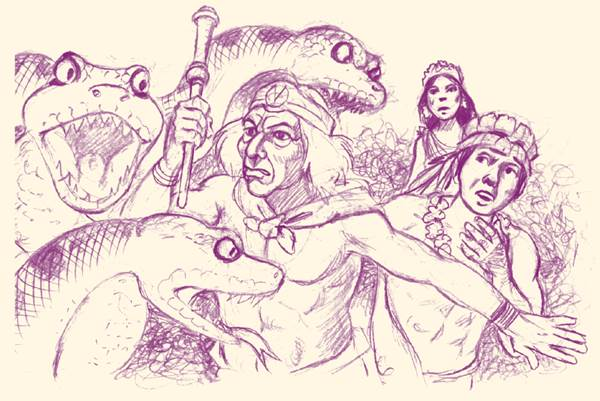

Reflexiono para avanzar
Alumno:
Reflexiono para avanzar
Alumno:
1. ¿Los mitos pueden ser similares o diferentes de una cultura a otra?
2. Lee el siguiente mito.
Sunki y el pueblo shuar
En el principio, en la selva, los hombres cazaban y pescaban, mientras que las mujeres cultivaban sus huertos y recogían frutas.
Un cazador se alejó de su casa en busca de animales, internándose en la montaña. Cerca del gran río, capturó fácilmente a una guanta.
Confiado en su suerte, regresó al siguiente día a las orillas del río. Mientras caminaba silenciosamente, pudo ver entre la bruma a una mujer joven y hermosa, de esbelto cuerpo y cabellos largos, sentada a la orilla. Era Sunki, hija del jefe de una tribu fabulosa que vivía en el fondo del gran río.
La joven preguntó al cazador:
—¿Qué haces por aquí y qué buscas en el gran río? Nadie ha llegado a este lugar hasta ahora, solamente tú.
—Busco una guanta o cualquier animal —contestó el cazador.
—¿Para qué la buscas? ¿Qué quieres hacer con un animal tan feo?
—Quiero llevar su carne a casa para comerla.
—¿Comerla? Pero las guantas para nosotros son repulsivas. ¿Cómo pueden ustedes comer algo tan desagradable?
—Ayer también cacé una guanta y estuvo deliciosa.
—¿De veras? ¿Puedes traer la cabeza de la guanta y mostrármela? —pidió la joven riendo, mientras se hundía en el gran río y su risa se alejaba.
Un día, Sunki llevó al cazador para presentarle a sus padres y les contó que su joven amigo pescaba carachas, las asaba y las comía. Para la gente del río, estos peces eran como las cucarachas que existían en la superficie.
—No te molestes, padre. Mi amigo come carachas y animales raros que para nosotros son desagradables.
Por un momento, el joven se alejó del fogón y, de pronto, las grandes boas que ahí habitan lo amenazaron.
—¡Sunki, Sunki, ayúdame por favor!
El padre de Sunki, que dominaba a las temibles boas, lo defendió. Una vez alejado el peligro, le explicó que, para ellos, esas serpientes eran guardianas.
Entre el cazador y Sunki nació algo más que curiosidad y amistad. Él le pidió que lo acompañara a su mundo para mostrarle cómo vivían en la superficie. El padre accedió y le entregó a su hija, con el único compromiso de que la cuidara.
—Te entrego a mi hija, pero cuida que no la maltrate nadie. Si algo le llegara a pasar con mi hija, será la naturaleza quien te castigue y soltaré a las boas para que acaben contigo y con tu familia.
El cazador la llevó a su hogar y la hizo su esposa. De toda su descendencia, se originó el pueblo shuar.
